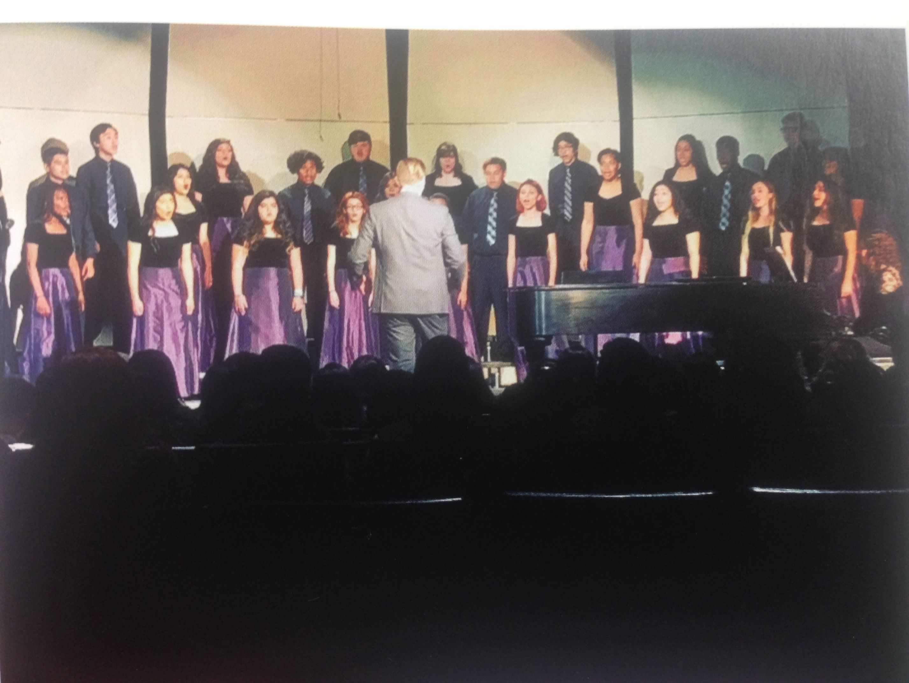
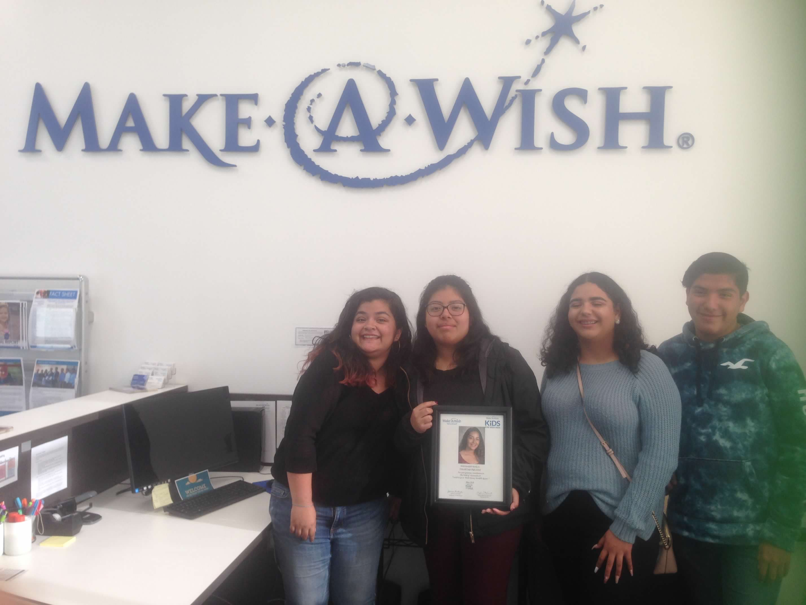
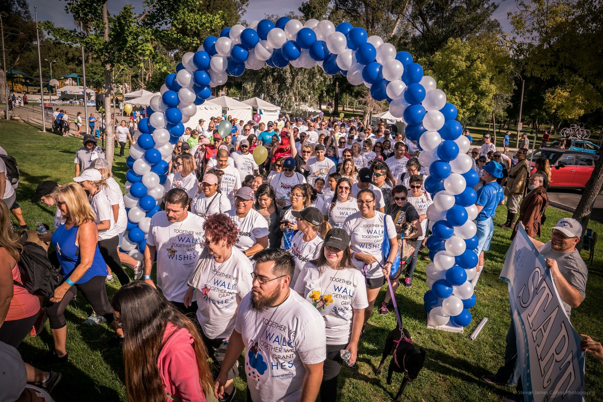
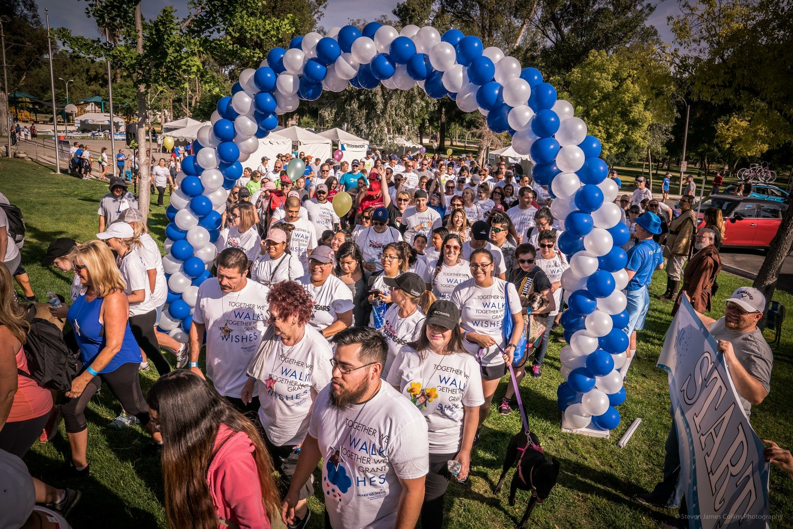
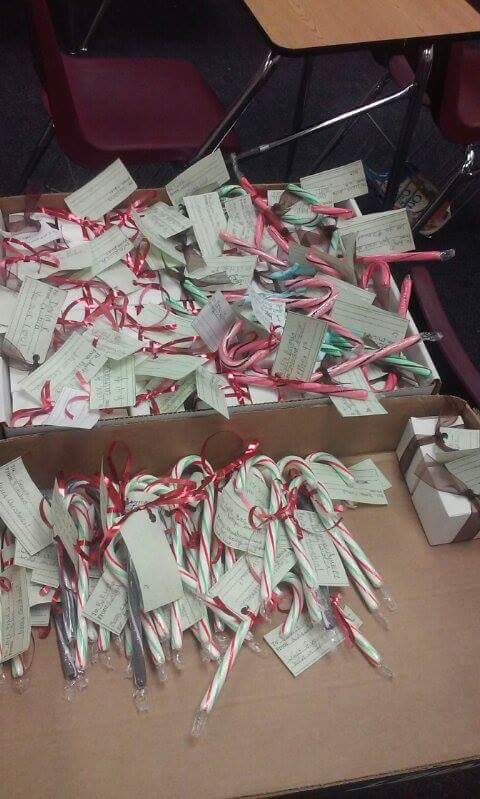
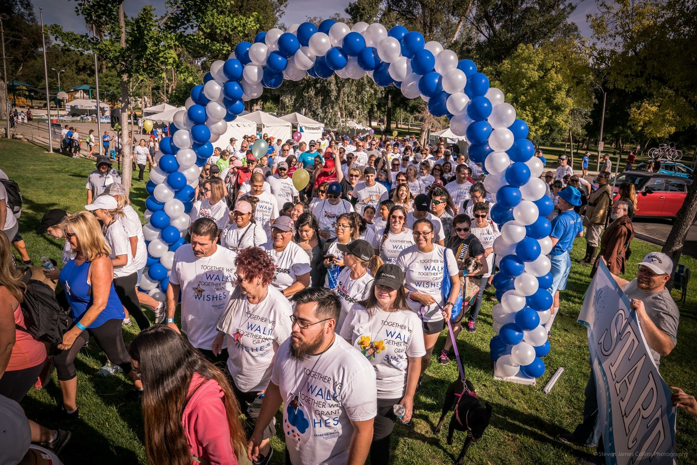
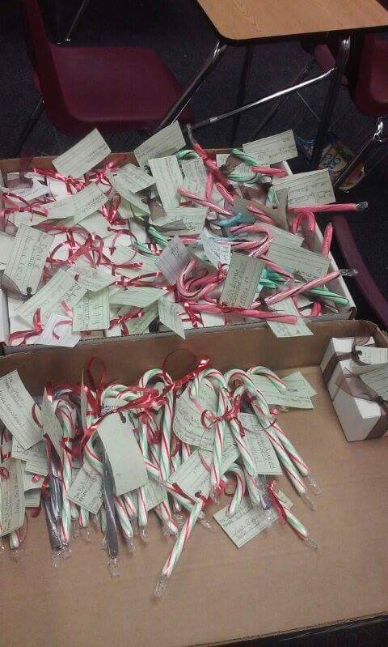

Cristina Zamarripa
My name is Cristina Zamarripa and I am 20 years old.
I am a third year psychology major at the University of California Riverside. I am a transfer student who transferred from Moreno Valley Community College to University of California Riverside. I have done volunteer work and have participated in several extra curricular activities. My volunteer work has range from care taking to raising money for children in need. Some extra curricular activities I have participated in have range from choir to clubs like Puente which is a transfer motivational club. On my off time I like to learn new skills and create with them. Things like knitting, painting, needle felting, writing, etc. I like to apply myself and be able to learn new skills so could further develop myself through creativity.
Attending Moreno Valley Community College before attending a University allowed me to fully understand myself when it came to my career goals. I was able to choose my major when it was a such a problem for me before hand. My hobbies include anything that allows me to create like painting or writing, video games, and going on walks. These things help keep me grounded through stressful times or when I need time for myself. After attending University I intend on looking for a career in my field and continuing my education further. I have worked at a retail store called Rue 21 and constantly organized clothes when needed and helped customers shop happily. Some traits I have are good leadership skills, good listening, time management, integrity, and loyalty.
Experience
Make A Wish
• Creating Meetings
• Creating Fundraisers
• Leading meetings and making them engaging
Child Care Taker for Church
• Taking care of children
• Providing a schedule for the children to follow
• Providing activites
• Feeding the children
Education
Univeristy of California Riverside
Moreno Valley Community College
Vista Del Lago High School
Portfolio


 


